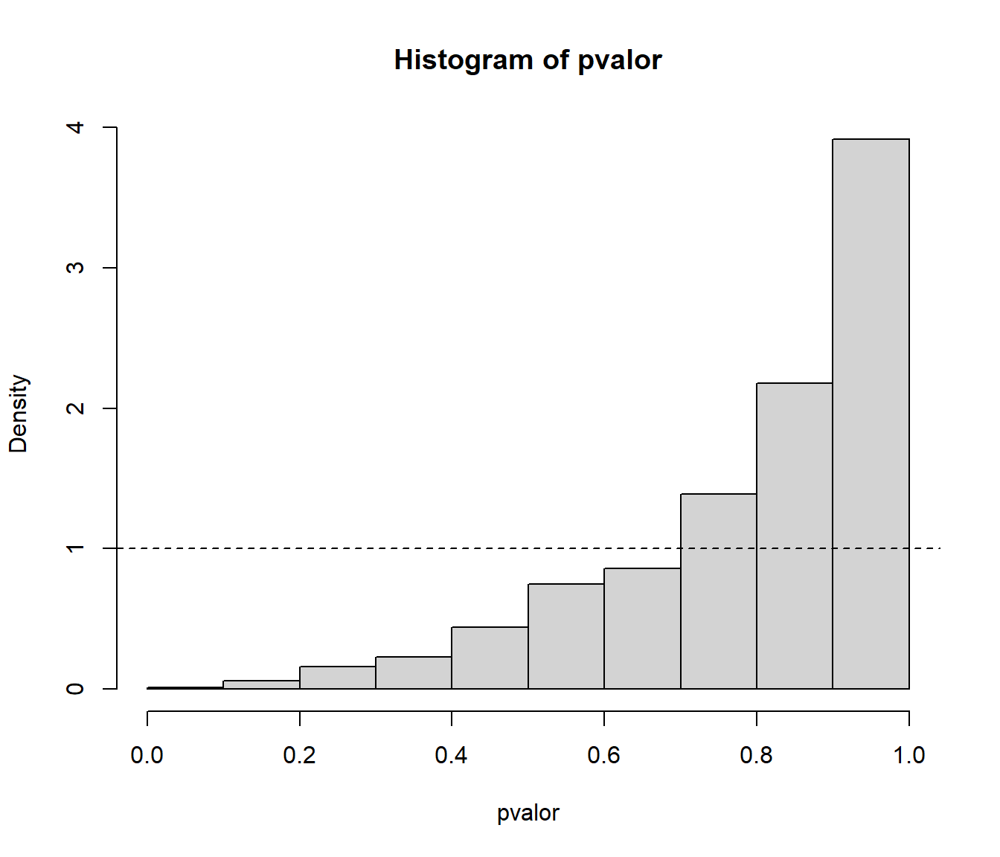
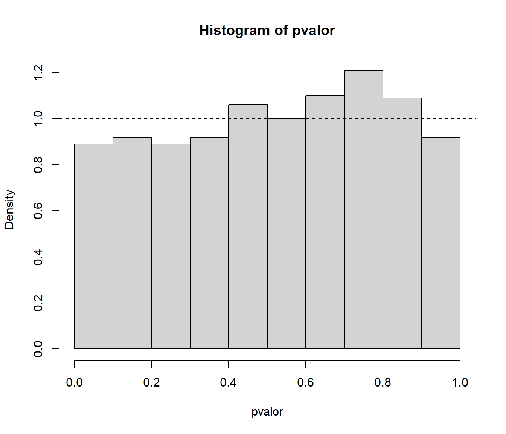

8.3 Contrastes de hipótesis
Ver Capítulo 5 de Cao y Fernández-Casal (2020).
En la Sección 3.3 del Tema 3 se propuso el análisis de la bondad de ajuste de un generador de números pseudo-aleatorios mediante el test de Kolmogorov-Smirnov (ver Sección B.1.5). Sin embargo, si \(H_{0}\) es compuesta (los parámetros desconocidos se estiman por máxima verosimilitud y se trabaja con \(\hat{F}_{0}\)) los cuantiles de la distribución (asintótica) de \(D_{n}\) pueden ser demasiado conservativos y sería preferible utilizar la distribución exacta.
Analizar el comportamiento del contraste de Kolmogorov-Smirnov para contrastar normalidad empleando repetidamente este test, considerando 1000 pruebas con muestras de tamaño 30 de una \(\mathcal{N}(0,1)\). Comparar gráficamente el ajuste de la distribución del \(p\)-valor a la de referencia (estudiar el tamaño del contraste).
Valores iniciales:
set.seed(54321) nx <- 30 mx <- 0 sx <- 1 nsim <- 1000 estadistico <- numeric(nsim) pvalor <- numeric(nsim)Realizar contrastes
for(isim in 1:nsim) { rx <- rnorm(nx, mx, sx) tmp <- ks.test(rx, "pnorm", mean(rx), sd(rx)) estadistico[isim] <- tmp$statistic pvalor[isim] <- tmp$p.value }Proporción de rechazos:
{ cat("\nProporción de rechazos al 1% =", mean(pvalor < 0.01), "\n") cat("Proporción de rechazos al 5% =", mean(pvalor < 0.05), "\n") cat("Proporción de rechazos al 10% =", mean(pvalor < 0.1), "\n") }## ## Proporción de rechazos al 1% = 0 ## Proporción de rechazos al 5% = 0 ## Proporción de rechazos al 10% = 0.001Análisis de los p-valores:
hist(pvalor, freq=FALSE) abline(h=1, lty=2) # curve(dunif(x,0,1), add=TRUE)
# Distribución empírica curve(ecdf(pvalor)(x), type = "s", lwd = 2, main = 'Tamaño del contraste', ylab = 'Proporción de rechazos', xlab = 'Nivel de significación') abline(a=0, b=1, lty=2) # curve(punif(x, 0, 1), add = TRUE)
Repetir el apartado anterior considerando el test de Lilliefors (rutina
lillie.testdel paquetenortest).library(nortest, quietly = TRUE)Valores iniciales:
set.seed(54321) nx <- 30 mx <- 0 sx <- 1 nsim <- 1000 estadistico <- numeric(nsim) pvalor <- numeric(nsim)Realizar contrastes
for(isim in 1:nsim) { rx <- rnorm(nx, mx, sx) # tmp <- ks.test(rx, "pnorm", mean(rx), sd(rx)) tmp <- lillie.test(rx) estadistico[isim] <- tmp$statistic pvalor[isim] <- tmp$p.value }Proporción de rechazos:
{ cat("\nProporción de rechazos al 1% =", mean(pvalor < 0.01), "\n") cat("Proporción de rechazos al 5% =", mean(pvalor < 0.05), "\n") cat("Proporción de rechazos al 10% =", mean(pvalor < 0.1), "\n") }## ## Proporción de rechazos al 1% = 0.01 ## Proporción de rechazos al 5% = 0.044 ## Proporción de rechazos al 10% = 0.089Análisis de los p-valores:
hist(pvalor, freq=FALSE) abline(h=1, lty=2) # curve(dunif(x,0,1), add=TRUE)
# Distribución empírica curve(ecdf(pvalor)(x), type = "s", lwd = 2, main = 'Tamaño del contraste', ylab = 'Proporción de rechazos', xlab = 'Nivel de significación') abline(a=0, b=1, lty=2) # curve(punif(x, 0, 1), add = TRUE)
Repetir el apartado a) contrastando una distribución exponencial y considerando 500 pruebas con muestras de tamaño 30 de una \(Exp(1)\).
Valores iniciales:
set.seed(54321) nx <- 30 ratex <- 1 nsim <- 500 estadistico <- numeric(nsim) pvalor <- numeric(nsim)Realizar contrastes
for(isim in 1:nsim) { rx <- rexp(nx, ratex) tmp <- ks.test(rx, "pexp", 1/mean(rx)) estadistico[isim] <- tmp$statistic pvalor[isim] <- tmp$p.value }Proporción de rechazos:
{ cat("\nProporción de rechazos al 1% =", mean(pvalor < 0.01), "\n") cat("Proporción de rechazos al 5% =", mean(pvalor < 0.05), "\n") cat("Proporción de rechazos al 10% =", mean(pvalor < 0.1), "\n") }## ## Proporción de rechazos al 1% = 0 ## Proporción de rechazos al 5% = 0.004 ## Proporción de rechazos al 10% = 0.008Análisis de los p-valores:
hist(pvalor, freq=FALSE) abline(h=1, lty=2) # curve(dunif(x,0,1), add=TRUE)
# Distribución empírica curve(ecdf(pvalor)(x), type = "s", lwd = 2, main = 'Tamaño del contraste', ylab = 'Proporción de rechazos', xlab = 'Nivel de significación') abline(a=0, b=1, lty=2) # curve(punif(x, 0, 1), add = TRUE)Diseñar una rutina que permita realizar el contraste KS de bondad de ajuste de una variable exponencial aproximando el \(p\)-valor por simulación y repetir el apartado anterior empleando esta rutina.
ks.exp.sim <- function(x, nsim = 10^3) { DNAME <- deparse(substitute(x)) METHOD <- "Kolmogorov-Smirnov Test of pexp by simulation" n <- length(x) RATE <- 1/mean(x) ks.exp.stat <- function(x, rate=1/mean(x)) { DMinus <- pexp(sort(x), rate=rate) - (0:(n - 1))/n DPlus <- 1/n - DMinus Dn = max(c(DMinus, DPlus)) } STATISTIC <- ks.exp.stat(x, rate = RATE) names(STATISTIC) <- "Dn" # PVAL <- 0 # for(i in 1:nsim) { # rx <- rexp(n, rate = RATE) # if (STATISTIC <= ks.exp.stat(rx)) PVAL <- PVAL+1 # } # PVAL <- PVAL/nsim # PVAL <- PVAL/(nsim + 1) # PVAL <- (PVAL + 1)/(nsim + 2) rx <- matrix(rexp(n*nsim, rate = RATE), ncol=n) PVAL <- mean(STATISTIC <= apply(rx, 1, ks.exp.stat)) return(structure(list(statistic = STATISTIC, alternative = "two.sided", p.value = PVAL, method = METHOD, data.name = DNAME), class = "htest")) }Simulación:
set.seed(54321) nx <- 30 ratex <- 1 nsim <- 500 estadistico <- numeric(nsim) pvalor <- numeric(nsim)Realizar contrastes
for(isim in 1:nsim) { rx <- rexp(nx, ratex) # tmp <- ks.test(rx, "pexp", 1/mean(rx)) tmp <- ks.exp.sim(rx, nsim = 200) estadistico[isim] <- tmp$statistic pvalor[isim] <- tmp$p.value }Proporción de rechazos:
{ cat("\nProporción de rechazos al 1% =", mean(pvalor < 0.01), "\n") cat("Proporción de rechazos al 5% =", mean(pvalor < 0.05), "\n") cat("Proporción de rechazos al 10% =", mean(pvalor < 0.1), "\n") }## ## Proporción de rechazos al 1% = 0.008 ## Proporción de rechazos al 5% = 0.058 ## Proporción de rechazos al 10% = 0.106Análisis de los p-valores:
hist(pvalor, freq=FALSE) abline(h=1, lty=2) # curve(dunif(x,0,1), add=TRUE)
# Distribución empírica curve(ecdf(pvalor)(x), type = "s", lwd = 2, main = 'Tamaño del contraste', ylab = 'Proporción de rechazos', xlab = 'Nivel de significación') abline(a=0, b=1, lty=2) # curve(punif(x, 0, 1), add = TRUE)Estudiar la potencia de los contrastes de los apartados c) y d), considerando como alternativa una distribución Weibull.
La distribución exponencial es un caso particular de la Weibull:
dexp(x, ratex) == dweibull(x, 1, 1/ratex). Estudiamos lo que ocurre al desplazardweibull(x, shape, 1/ratex)con0 < shape < 2.CUIDADO: las simulaciones pueden requerir de mucho tiempo de computación (consideramos valores pequeños de
nxynsimen datos y enks.exp.sim).set.seed(54321) nx <- 20 ratex <- 1 # Puede ser interesante representarlo variando rate nsim <- 200 alfa <- 0.1 # Puede ser interesante representarlo variando alfa shapex <- seq(0.25, 1.75, len=21) preject <- numeric(length(shapex)) # Porporciones de rechazos con ks.test ks.test.p <- function(x) ks.test(x, "pexp", 1/mean(x))$p.value preject2 <- preject # Porporciones de rechazos con ks.exp.sim ks.exp.sim.p <- function(x) ks.exp.sim(x, 200)$p.value for (i in seq_along(shapex)) { rx <- matrix(rweibull(nx*nsim, shape = shapex[i], scale = 1/ratex), ncol=nx) preject[i] <- mean( apply(rx, 1, ks.test.p) <= alfa ) preject2[i] <- mean( apply(rx, 1, ks.exp.sim.p) <= alfa ) } plot(shapex, preject, type="l", main = paste("Potencia del contraste ( alfa =", alfa, ")"), xlab = "shape", ylab = "Proporción de rechazos") lines(shapex, preject2, lty = 2) abline(h = alfa, v = 1, lty = 3)
El estadístico de Kolmogorov-Smirnov Dn = max(c(DMinus, DPlus)) tiene ventajas desde el
punto de vista teórico, pero puede no ser muy potente para detectar diferencias entre la
distribución bajo la hipótesis nula y la distribución de los datos.
La ventaja de la aproximación por simulación es que no estamos atados a resultados teóricos
y podemos emplear el estadístico que se considere oportuno
(la principal desventaja es el tiempo de computación).
Por ejemplo, podríamos pensar en utilizar como estadístico la suma de los errores en
valor absoluto del correspondiente gráfico PP, y solo habría que cambiar el estadístico
Dn en la función ks.exp.sim por Dn = sum(abs( (1:n - 0.5)/n - pexp(sort(x), rate=rate) )).